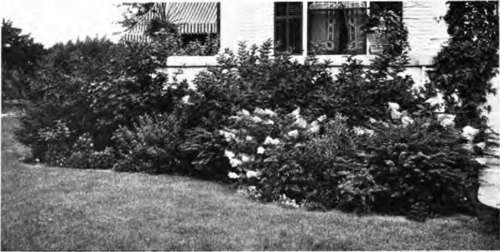

Chapter VII. The Garden's Needs In Autumn
Description
This section is from the book "Flower Gardening", by H. S. Adams. Also available from Amazon: Flower gardening.
Chapter VII. The Garden's Needs In Autumn
The work of the garden year is materially less arduous when a proper proportion of it is spread through the autumn months. A good garden axiom is to leave nothing until spring that can be done in autumn. No matter how much is gotten out of the way, there need be no fear that one cannot find enough to do in spring.
It will not kill peonies to move them in spring, but the best month is September. Oriental poppies and Lilium candidum are transplanted the month previous, as they make a new foliage growth in early autumn. The other lilies are generally moved in autumn, or a little before that if the foliage has died down; the spring bulbs in October. This is about all that there is to the necessity of autumn transplanting.
The advisability of autumn transplanting is quite another matter. It applies with particular force to the making over of the hardy garden, which is done to advantage every few years. There is more time to do the work in autumn than in spring and if the planting includes bulbs, other than the rarities that bloom after September, everything can be taken out. Though not necessary, this is always a good plan.
In that event, lift out all the plants and lay them on old bagging or canvas spread on the adjacent path or grass plot. This saves cleaning up afterwards and, if the cloths are not too long, plants may be carried in them to another spot. Then spade the ground twelve to eighteen inches deep and work in some well-rotted manure, unless the planting is to be of lilies or larkspurs; these do not like to come in close contact with that kind of fertilizer. Leaf mold is always a good addition and if the soil is heavy a little sand may be mixed in, too. If possible, have all the plants back in the ground by nightfall; if not, place them under cover to keep the frost away from the roots. Separate into parts any plants that are large enough. When the ground is tolerably moist no watering need be done, but it always helps a plant to re-establish itself quickly.
The category of advisability also includes the transplanting of a considerable number of the perennials that bloom in early spring—more especially those of April. These can be moved in April, but the bloom is more satisfactory when the plants establish themselves before winter and thus have a chance to develop foliage and blossoms without any setback. The bleeding heart, all the primulas, Arabis albida, Phlox subulata, Alyssum sax a tile and coltsfoot are some of the plants that it is wise to transplant in autumn.
Certain of the biennis notably foxgloves, Canterbury bells, hollyhocks and Myosotis dissitiflora, it is well to transplant to the beds in which it is proposed to have them bloom the next year, if this has not been done already; likewise summer-sown pansies, violas and dianthus. Move into their permanent places any perennials grown from seed and likely to bloom another year.
Where there is actual danger of winter-killing, very young biennials and perennials may be carried over in a coldframe and bedded out in April or May. This is also a good way to catch up, if planting has been late or growth slow; development then goes on through the autumn and is resumed early in the spring. Put only a few leaves in the frame; just enough to cover the plants lightly, as if the fall had been natural. Bank earth against the frame and when winter has set in lay a piece of rush matting or some cornstalks on top of the glass. If there are warm days, let in some air and light in the middle of thé day when the sun is warmest.
Planting in autumn has a slight distinction from transplanting, for in the case of purchased plants and bulbs the time is sometimes regulated by trade exigencies. Thus lilies, other than L. candidum, may be transplanted in September and October, but purchased bulbs, especially the imported ones, are slow getting to market. Lily bulbs from Japan are planted in November and even in early December, the ground being kept from freezing by a heavy cover of manure. A good bulb rule is to have crocuses and daffodils in the ground in early October and other bulbs by the end of the month if they arrive in time.
Allow about two inches from the base of the bulb to the top of the ground for small bulbs and about five inches for the larger ones. If the lilies are stem-rooting kinds, allow six to seven inches. For planting crocuses, scillas and snowdrops in the lawn there is a special dibble; where that is lacking use a pointed stick to make the hole. Whether bulbs are planted in the garden or in the grass, press the soil firmly over them. A little sand under and around the bulb is a good thing for lilies, hyacinths, tulips and fritillaries. Both of the best known fritillaries, the crown imperial and the guinea-hen flower, have bulbs that are slightly hollowed on top. In order that too much moisture may not settle in the hollow, it is customary to plant them tilted a little.
In general, autumn planting of perennials that either have to be purchased or are acquired by gift is the better way out when the plants bloom as early as April. In the matter of purchases especially, the result is much more satisfactory in certain instances. Thus most of the primulas in the trade are grown in pots from seed and, being kept in coldframes, are likely to arrive with the bloom almost or quite gone; by autumn planting a year would have been gained.
So with leopard's bane, aubrietia and trollius.
"Where the house and lawn are framed only by shrubbery borders, the flower borders being largely, or quite, out of the picture".
Again some roots, like bleeding heart, are dug up in autumn and stored as the only means of early spring delivery. Better winter them in your garden than to buy them in spring, possibly sprouting and consequently weakened.
Of later-blooming flowers it is well to plant all of the irises excepting the bulbous ones in September, as spring will then find them well established instead of trying to readjust themselves the while they are gathering strength to bloom. Bulbous irises are planted in October. It is well also to plant Phlox paniculata in September, or October. The reason is the same; though less urgent, as the blooming period is later.
Continue to:
- prev: Chapter VI. Work For Summer Days
- Table of Contents
- next: The Garden's Needs In Autumn. Continued